Selected Work
Research
(* equal contribution · † project lead) Full list on Google Scholar.
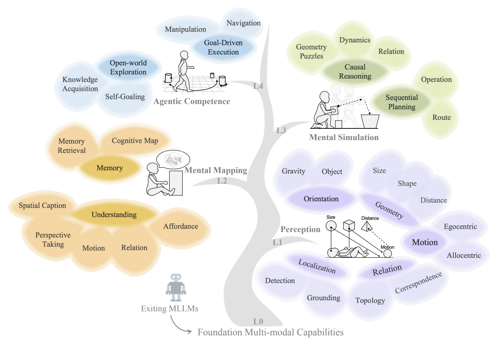

Depth Anything 3: Recovering the Visual Space from Any Views
ICLR 2026
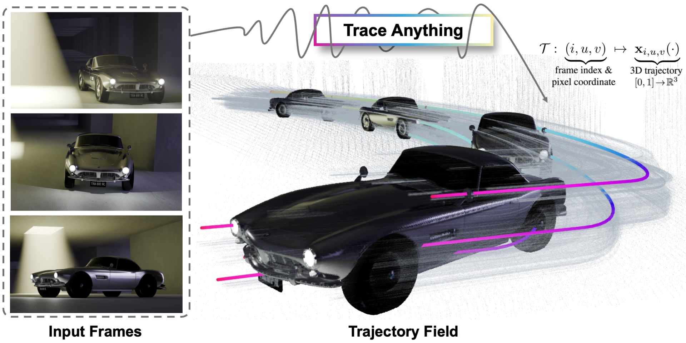
Trace Anything: Representing Any Video in 4D via Trajectory Fields
ICLR 2026
Manipulation as in Simulation: Enabling Accurate Geometry Perception in Robots
ICLR 2026
Video Depth Anything: Consistent Depth Estimation for Super-Long Videos
CVPR 2025
Prompting Depth Anything for 4K Resolution Accurate Metric Depth Estimation
CVPR 2025
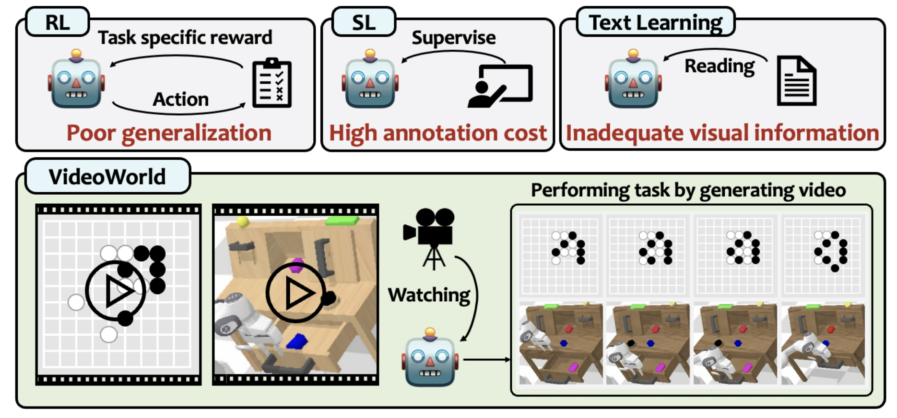
VideoWorld: Exploring Knowledge Learning from Unlabeled Videos
CVPR 2025
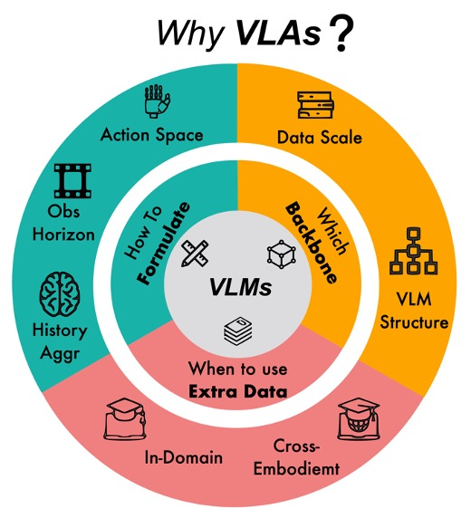
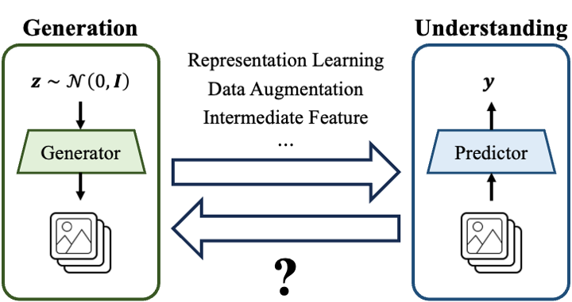
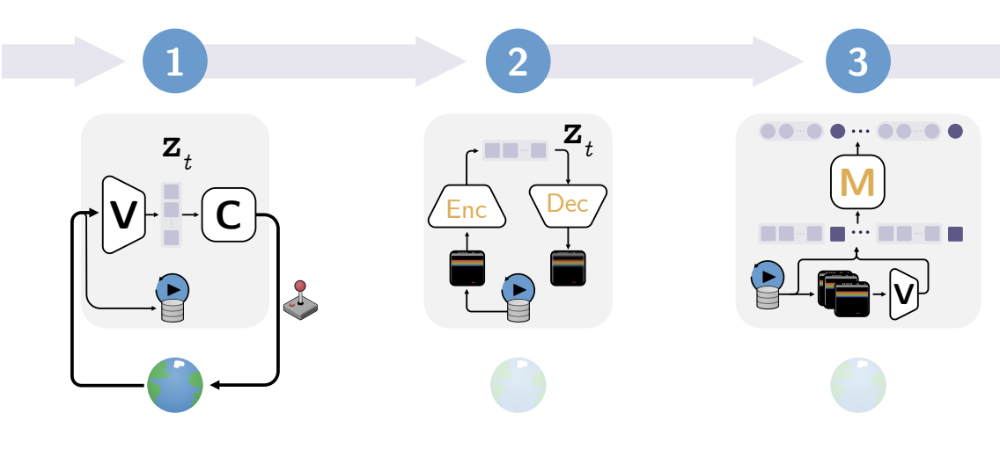
Depth Anything: Unleashing the Power of Large-Scale Unlabeled Data
CVPR 2024
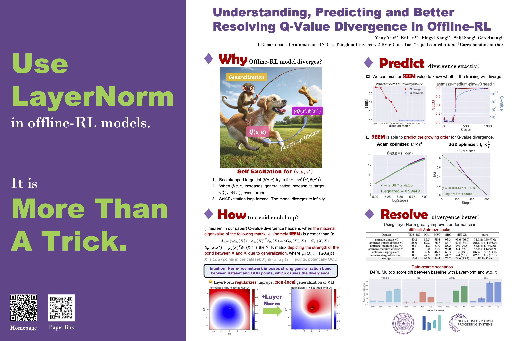
Understanding, Predicting and Better Resolving Q-Value Divergence in Offline RL
NeurIPS 2023
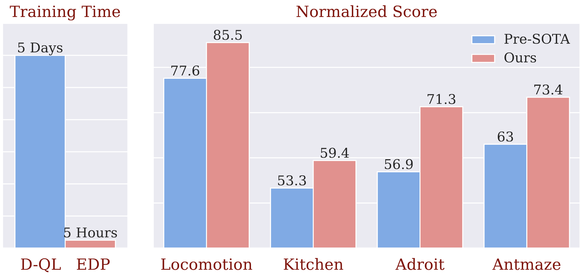
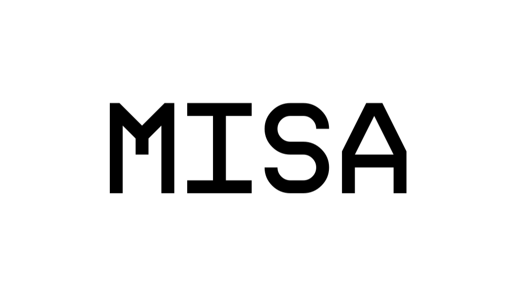
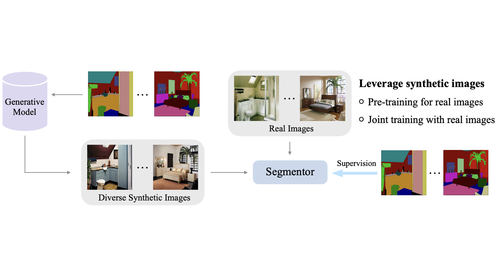
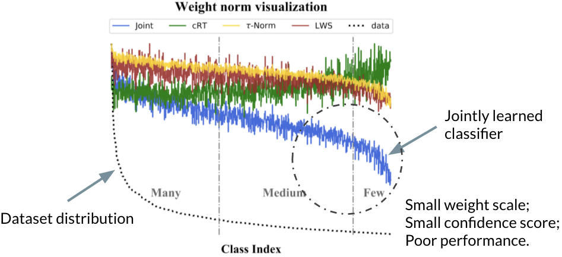
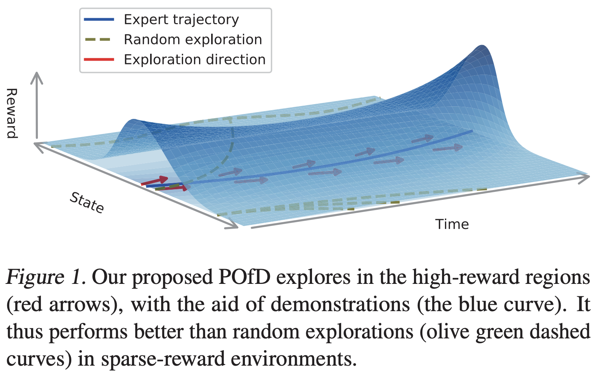
Open Projects
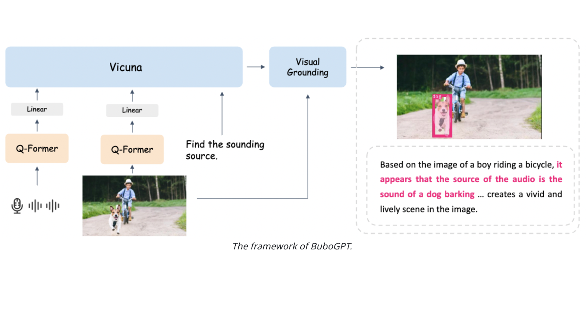
BuboGPT: Enabling Visual Grounding in Multi-Modal LLMs
Open Project, 2023